In 1900, four of every ten Americans lived on a farm. Today fewer than two in a hundred do — and the land grows six times the corn. This is the story of how that happened: the machines, the techniques, and who ended up owning the land. Written for readers who have never seen America.
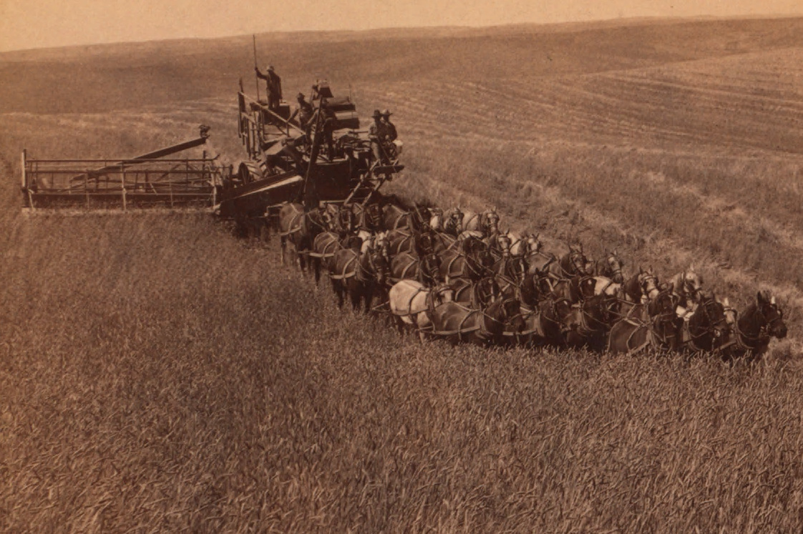
Before the machines, meet the stage: a continent-sized country where farming follows rainfall and glaciers, the fields are perfect mile squares, and nearly half the population lives behind a plow horse.
Why US crops sort into belts, and why the fields are square.
To follow this story you need a mental map of a very large place. The United States mainland stretches about 4,500 km east to west — and its farmland covers 880 million acres (356 million hectares), about 39% of the entire country. An acre is the basic American land unit: 0.405 hectares, a bit more than half a football pitch. Everything in this story is measured in acres, so keep that picture handy.
Two natural facts organize all of it. First, the middle of the country was flattened and enriched by Ice Age glaciers, which left a vast plain of deep, black, absurdly fertile soil (soil scientists call it mollisol). Second, rain falls generously in the east and less and less as you move west, until farming without irrigation becomes a gamble. In 1878 the explorer John Wesley Powell drew the dividing line at the 100th meridian — the north–south line where rainfall drops below about 20 inches (508 mm) a year. East of it, crops grow on rain. West of it, you irrigate, or you raise cattle on dry rangeland.
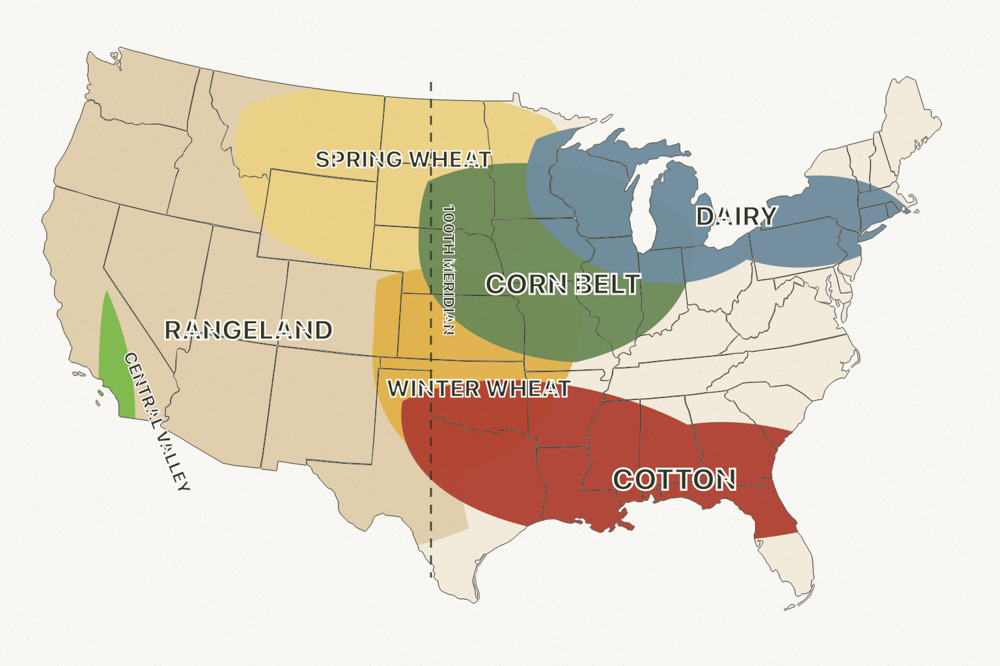
Those two facts create the belts — regions so specialized they are named like climate zones. The Corn Belt (Iowa, Illinois, Indiana and their neighbors) sits on the best glacial soil with just enough summer rain; Iowa and Illinois alone grow about a third of all American corn (maize — Americans say "corn"). The drier Plains split into two wheat belts: winter wheat in Kansas and Oklahoma, sown in autumn and harvested in early summer, about 70% of the crop; and spring wheat in the Dakotas and Montana, where winters are too brutal for autumn seedlings to survive. The Cotton Belt spans the old South — the land of the slave plantations, which this story returns to in Chapter 7. Dairy cattle cluster in the cool Great Lakes states and New York. And California's Central Valley, on under 1% of US farmland, grows 40% of the country's fruits and nuts.
Now the strange part: the squares. In 1785, the young United States passed a law to survey all its new western land into a perfect grid before selling it — the Public Land Survey System. The grid's unit is the section: one square mile, which is 640 acres (2.59 km²). Thirty-six sections make a township, six miles by six. In 1862 the Homestead Act offered any settler a free quarter-section — 160 acres, 65 hectares — for living on it five years. By 1934, 270 million acres, a tenth of the entire country, had been given away this way to 1.6 million families. That is why, flying over the Midwest today, you look down on an endless checkerboard: every line of it is a road or fence on the 1785 grid.
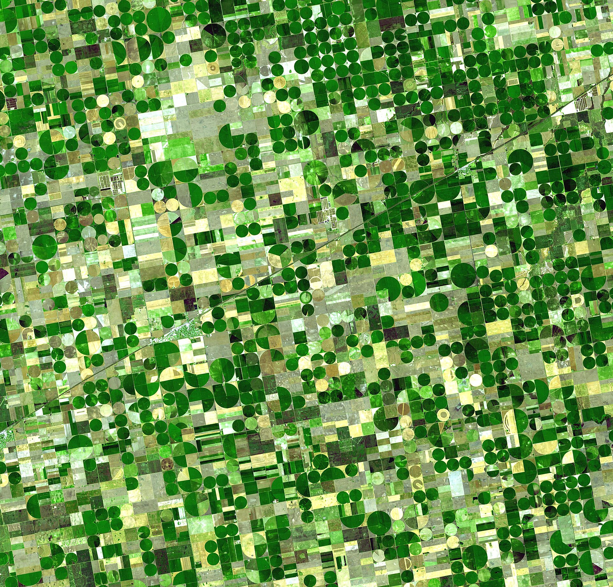
A diversified family world of kerosene lamps, egg money, and mud roads.
Start with the scale of it. The 1900 census counted 5.7 million farms, averaging just 147 acres (59 hectares) each. About 39% of all Americans — 29 of 76 million — lived on a farm, and 41% of the entire workforce farmed. Farming wasn't an industry; it was the default way of being American.
The farm itself was a small, self-provisioning world. The average farm produced five different commodities: typically corn fed to pigs (the "corn-hog system" — corn walks to market as bacon), a dairy cow or two, a flock of chickens, a vegetable garden, an orchard. The chickens mattered more than they sound: egg money — cash from selling eggs and butter — was traditionally the farm wife's own income. Families bought little: food took 42.5% of an average household budget in 1901 (today it is under 14%), so feeding yourself first was the whole strategy.
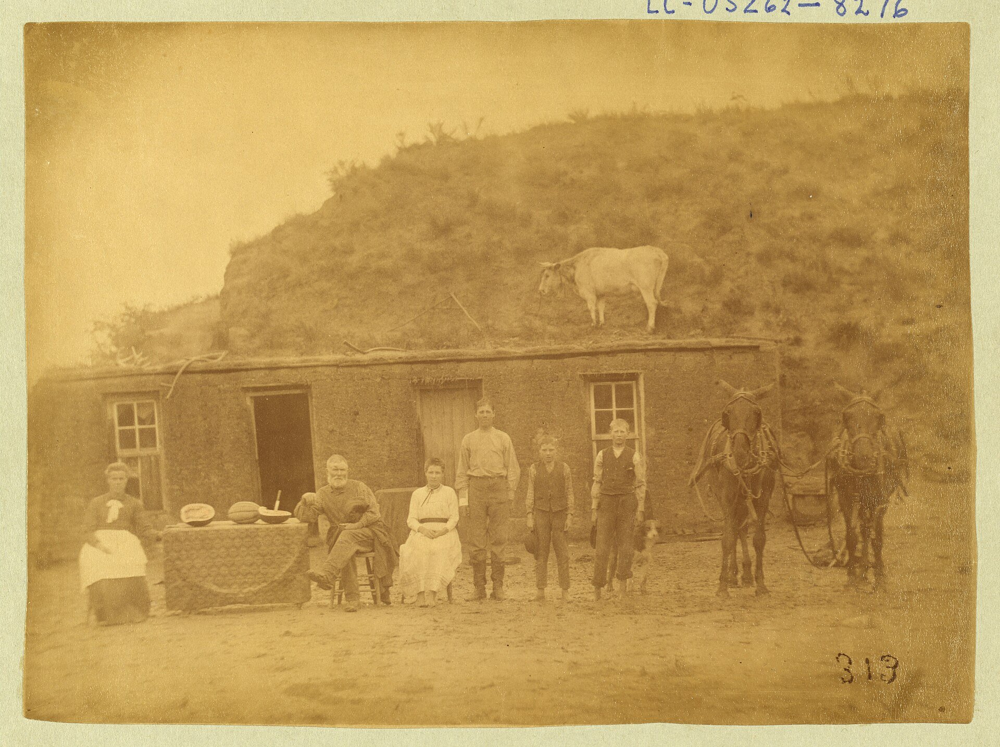
There was no electricity — that arrives in Chapter 6 — so the farm ran on kerosene lamps, hand-pumped water, wood stoves, and an outdoor toilet (the "outhouse"). Roads were dirt, which meant mud. But the countryside was dense with institutions a visitor today would not expect. Some 200,000 one-room schoolhouses dotted the country — in 1913, half of all American schoolchildren sat in one, all ages taught together by one teacher. The county fair — an annual festival where farm families compete over the best livestock, pies, and quilts — was the social event of the year. And from 1902, Rural Free Delivery brought mail to every farm gate, which meant the Sears catalog: a thousand-page book from which a farmer could order a plow, a dress, or — between 1908 and 1942 — an entire house, shipped as a numbered kit by railroad.
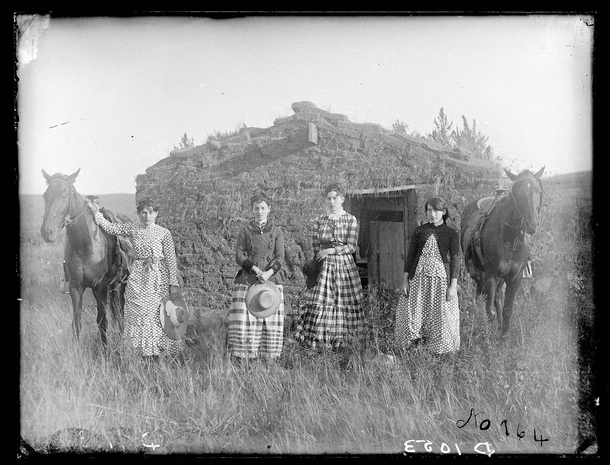
Was it a good life? By 1900, actually, yes — for owners. Historians call 1900–1914 the Golden Age of American agriculture: crop prices were strong, farm incomes doubled, land values tripled. Farm prices and city prices were in balance, a balance so fondly remembered that the ratio of 1909–1914 was later written into law as parity — the benchmark of what farm prices "ought" to be. Remember parity; it returns in the New Deal. But note the shadow in the statistics: even in 1900, 35% of farms were worked by tenants — families farming land they did not own — and in the South it was nearly half. Ownership, the third thread of this story, was already fraying.
Peak horse: 26.7 million animals and the machines they pulled.
Here is the number that defines the era: at their 1918 peak, American farms worked 26.7 million horses and mules, and in 1915, 93 million acres — 27% of all harvested cropland — grew nothing but their feed. A quarter of American agriculture existed to fuel its own engines. Every technology in this chapter is a way of spending that muscle.
The basic act was plowing — dragging a curved steel blade (the moldboard plow) through the earth to turn it over, burying weeds and opening soil for seed. With a walking plow, a farmer gripped two handles, drove two horses, and walked roughly 8 miles for every acre. A standard 40-acre field meant about 330 miles on foot, at 1 to 2 acres a day. Riding versions (the sulky plow) got him off his feet and up to 7 acres a day. After plowing came the harrow to smooth the soil, the planter to seed it, and the cultivator — a horse-drawn frame of small blades steered between crop rows, all summer, to kill weeds. Remember the cultivator: its job is what keeps horses employed even after tractors arrive.
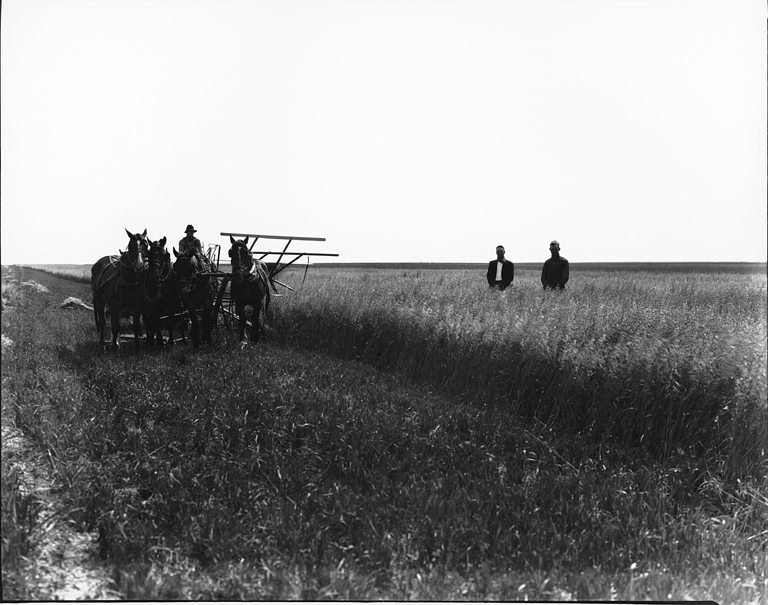
Harvest was the great bottleneck, and its machines came in two stages. The binder cut wheat and tied it into sheaves (bundles), which crews stood upright in little pyramids called shocks to dry. Weeks later came the threshing machine — a huge stationary device that beat the grain loose from the straw. Threshers cost over $4,000 (about $100,000 in today's money), far beyond one family, so 10 to 20 families shared one in a threshing ring: the crew of 15–30 men moved from farm to farm, and the farm wives competed to lay out legendary noon dinners — fried chicken, three kinds of pie — for the whole neighborhood. Threshing day was harvest, festival, and social contract in one. Hold that image; Chapter 10 is about its extinction.
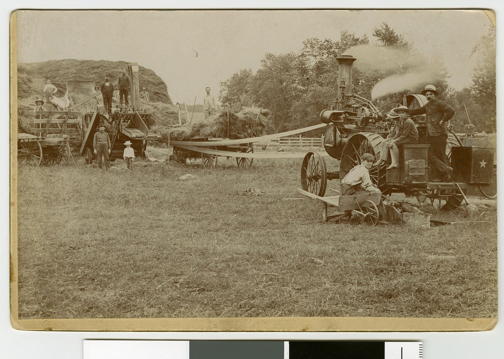
Could you scale animal power up? The Pacific Northwest tried. On the steep wheat hills of Washington State, ground-driven combines were hauled by teams of 20 to 33 horses and mules, cutting 40 acres a day with a crew of six (you saw one at the top of this page). That was the ceiling: more horses than that became unmanageable rope-work. By 1920, gasoline was already winning — 166 companies were building 200,000+ small tractors a year, and the steam engine was dying. The animals' turn was next.
A cheap tractor from the man who made the Model T, a decade of black blizzards, electricity down every dirt road, and a machine that ends three centuries of cotton hand-labor. Thirty years that broke the old farm and built the template of the new one.
Fordson to Farmall: the fifty-year funeral of the farm horse.
The tractor did not arrive as a monster; it arrived as a bargain. Early tractors were enormous, expensive plowing engines. Then in October 1917 Henry Ford — already the world's most famous industrialist — launched the Fordson Model F at $750: small, light, and built on an assembly line like his Model T car. When demand slumped in 1922, Ford simply cut the price to $395 — roughly the price of a good team of horses. International Harvester, his terrified competitor, answered with "$230 off — and we'll throw in a free plow." Farmers watched the giants brawl and bought. At its mid-1920s peak, about three of every four tractors sold in America were Fordsons — but by 1928 the Farmall had overtaken it, and Ford ended US Fordson production that February.
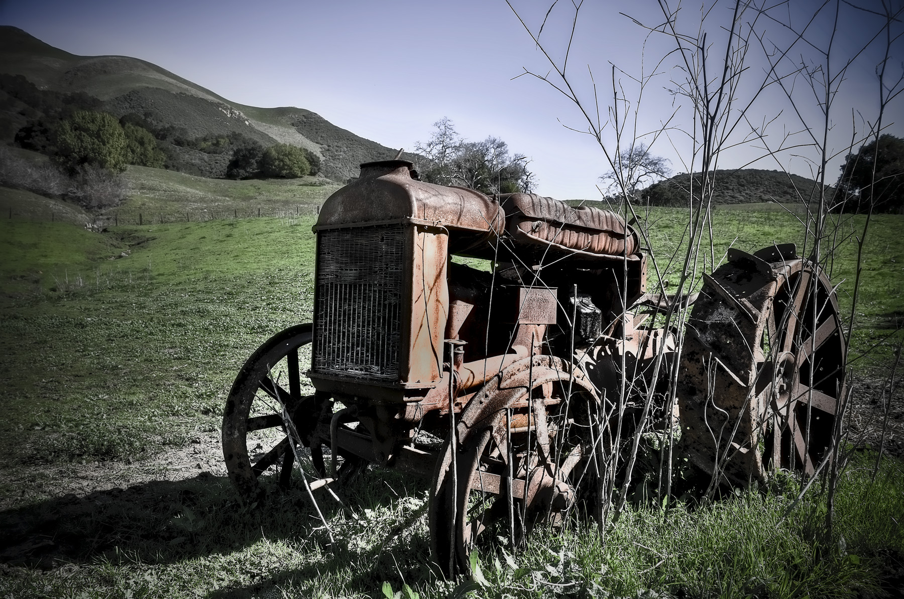
But the Fordson had a fatal gap: it could pull, but it could not weed. Corn and cotton are row crops — planted in spaced rows that must be cultivated all summer — and a clumsy tractor couldn't steer between the rows without crushing them. So farmers kept their horses for cultivating, and paid to feed both. The fix came in 1924: International Harvester's Farmall, a light tricycle-shaped machine with high clearance and narrow front wheels that ran between the rows. It could plow, plant, cultivate, and drive stationary machines with its spinning power take-off shaft. For the first time, a farmer could sell the horses — all of them. "General-purpose" tractors went from 38% of sales in 1935 to 85% by 1940.
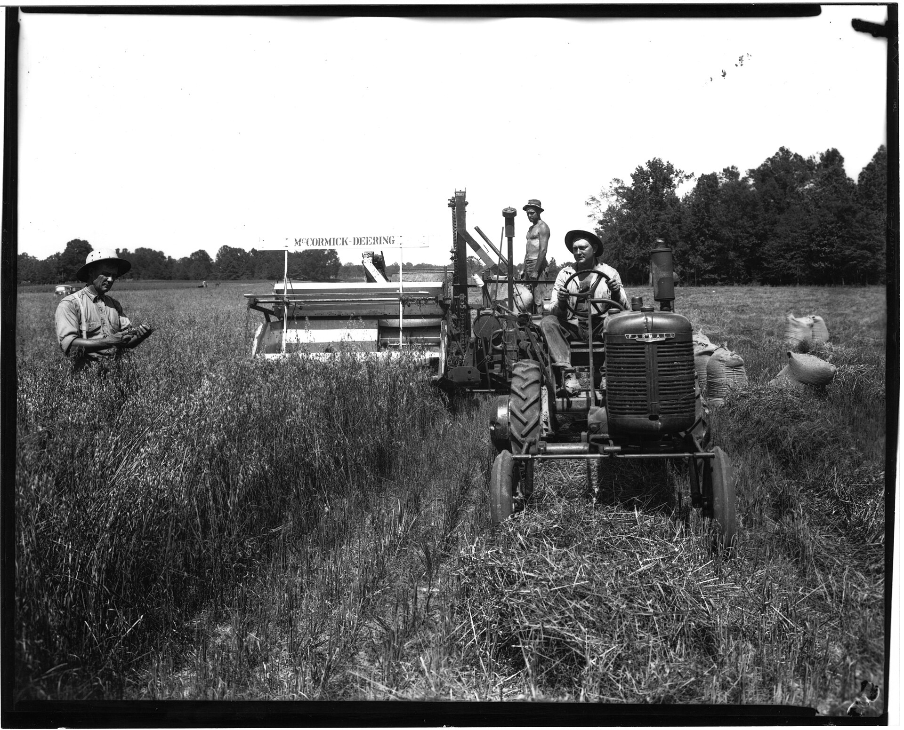
Three refinements finished the design, and they are still on every tractor built today: rubber pneumatic tires (1932, about 30% better fuel economy than steel lugs), the diesel engine (1930s), and Irish engineer Harry Ferguson's three-point hitch (sealed with a literal handshake with Henry Ford in 1938) — a linkage that carries implements on the tractor itself and automatically stops the deadly backward flip that had killed Fordson drivers. A period detail worth savoring: swindlers so flooded the young market with fantasy horsepower claims that Nebraska passed a law in 1919 — no tractor could be sold in the state until the university had publicly tested it. The Nebraska Tractor Tests still run today.
The numbers tell the rest. Tractors: 246,000 (1920) → 3.25 million (1950). Horses and mules: 25.2 million → 7.6 million over the same years; in 1954 tractors outnumbered horses on American farms for the first time, and by 1970 working animals were effectively gone. One tractor replaced about five horses — and freed the land that fed them: some 90 million acres switched from growing horse feed to growing food and cash crops, an invisible continent-sized harvest gain before a single seed improved. Economists Olmstead and Rhode calculate that without the tractor the US would have had about 956,000 more farms in 1960 — because a machine that costs the same whether it works 100 acres or 300 pushes every owner to farm more land. The consolidation thread of this story starts here, in the price of iron.
The decade the plowed-up prairie blew away.
Everything in the last chapter had a price, and this is where it was paid. During the First World War, wheat hit $2.12 a bushel (from $0.78), and the government guaranteed the price. On the dry southern Great Plains — the flat, treeless grassland west of the good rain — that was an irresistible invitation. In the "Great Plow-Up," farmers with tractors and disc plows turned 5.2 million acres of never-farmed native grass into wheat fields. The tractor made it fast: breaking prairie sod went from 3 acres a day with horses to about 50 with a tractor. The grass whose roots had held that dry soil in place for ten thousand years was gone. Then wheat prices collapsed, fields were abandoned bare — and in 1930 the rain stopped.
Four droughts hit in ten years; NASA's reconstruction rates 1934 as North America's worst drought in a thousand years. The soil, loose and naked, simply left. Dusters — rolling walls of black dirt driven by 50–60 mph winds — turned noon to midnight. On Black Sunday, April 14, 1935, a single storm lifted an estimated 300 million tons of topsoil — turning afternoon to pitch dark; the next day a reporter's dispatch coined the name "dust bowl." A May 1934 storm carried Plains dirt onto Chicago, Boston, New York City — and ships 300 miles out in the Atlantic. Children died of "dust pneumonia," lungs packed with silica. In 1935 alone the southern Plains lost 850 million tons of topsoil.
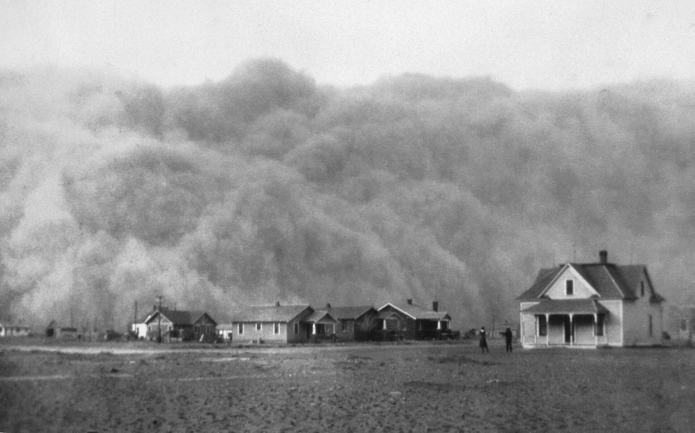
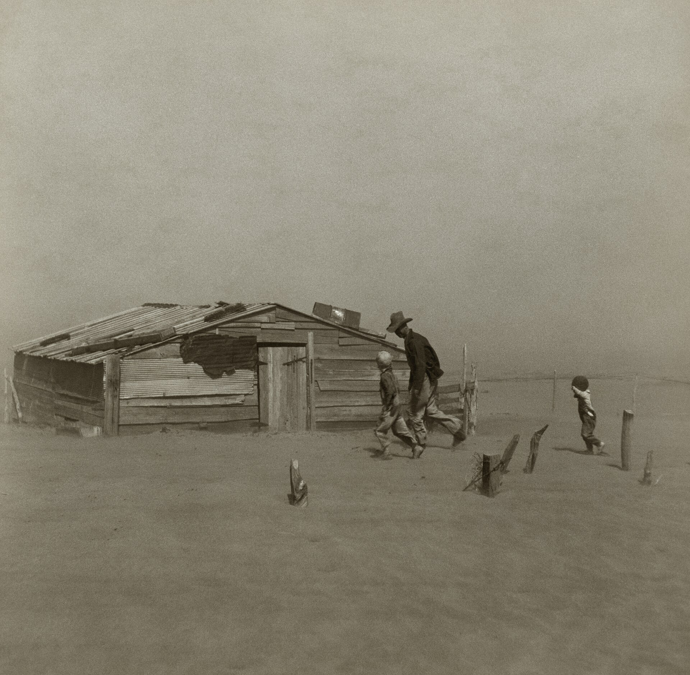
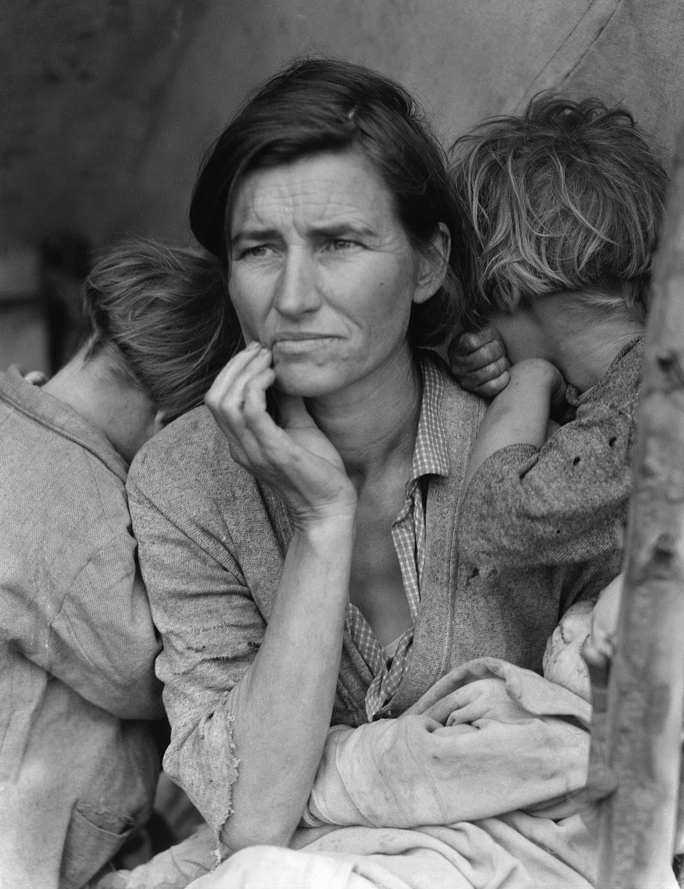
People left. By 1940 2.5 million had abandoned the Plains states — then the largest migration in American history. Over 200,000 took Route 66 to California, where they were mocked as "Okies" (from Oklahoma — though only about a fifth actually were). John Steinbeck's novel The Grapes of Wrath and Lange's photographs made their faces permanent. The panhandle counties at the storm's core — see the map — lost a third of their people.
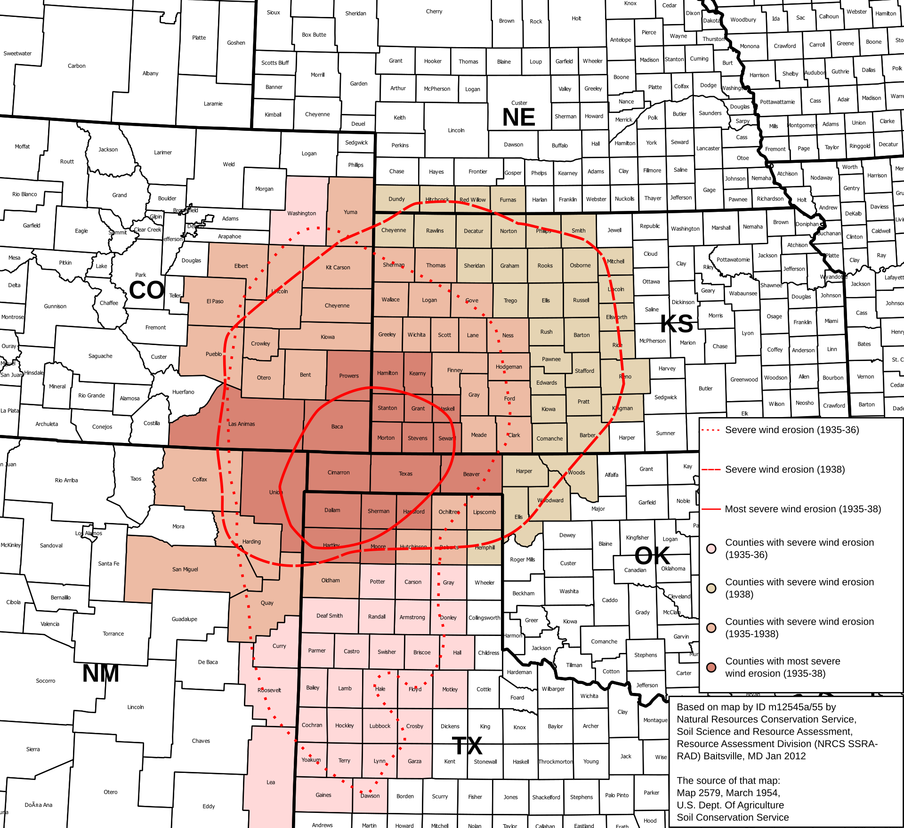
The response invented modern soil policy. Soil scientist Hugh Hammond Bennett, testifying before Congress in April 1935, famously timed his speech so a dust cloud — Plains soil — was darkening Washington's own sky: "This, gentlemen, is what I have been talking about." The Soil Conservation Act passed within weeks. Crews taught contour plowing (plowing along a slope's curves, not up and down); the government planted 220 million trees in shelterbelts — rows of trees as wind walls; soil blowing fell 65% by 1938. The rains returned in 1939. The grass did not: much of the core never went back to prairie, and Chapter 11 tells what waters it instead.
Washington starts paying farmers, and wires the countryside.
The Golden Age died in 1920. Wartime demand vanished, wheat fell from $2.16 to $1.03 in two years, and while city America enjoyed the Roaring Twenties, farm America spent the decade sliding. Then the Depression arrived on top. By 1932, corn was so worthless that Midwestern families burned it in their stoves — cheaper heat, per unit, than coal. Farm income fell by half. Something structural had to give.
What gave was the idea that government stays out of farming. The Agricultural Adjustment Act (May 1933) made a blunt bargain: since every farmer producing flat-out guaranteed everyone's ruin, the government would pay farmers to plant less, lifting prices by cutting supply. Because the 1933 crop was already growing, year one meant plowing under 10 million acres of cotton and slaughtering some six million young pigs — a moral scandal in a hungry country that the program never quite lived down. But incomes rose about 50% by 1935, and the machinery stuck: struck down by the Supreme Court in 1936, rebuilt in 1938, the system of price supports and payments has run continuously ever since. Congress renews it roughly every five years in a giant law called the farm bill — and if it ever failed to, US policy would legally snap back to the 1938/1949 acts, which lawyers call "permanent law." The subsidy era, born in 1933, never ended. (One dark side-effect belongs to the next chapter: in the South, those checks went to landlords, who used them to evict tenants and buy tractors.)
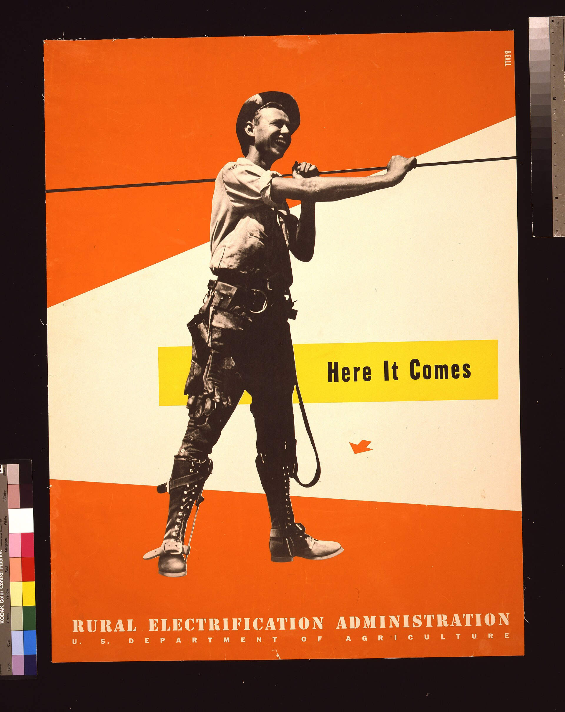
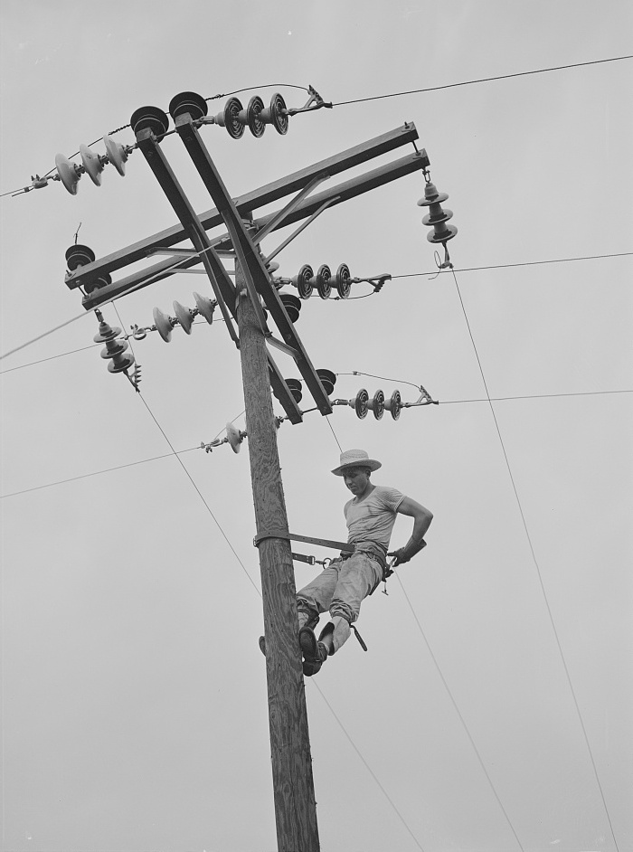
The other 1935 revolution came down a wire. That year, nine of every ten American farms had no electricity. Private utilities refused to build lines down half-empty dirt roads ($500–800 a mile) for customers who might buy one lightbulb's worth of power. The Rural Electrification Administration (created May 11, 1935) went around them: it lent federal money on 25-year terms to co-ops — nonprofit companies owned by the farm families themselves, who signed up neighbors for a $5 membership. The utilities scoffed; the co-ops' loan default rate turned out to be under 1%. Electrified farms went from ~11% (1935) to 25% (1939) to over 90% by 1953.
It is hard to overstate what the switch flip meant, especially for farm women: electric water pumps ended decades of hand-hauling (a farm household hauled tonnes of water a year), then came indoor plumbing, refrigeration (food kept overnight in summer), milking machines, the radio — the farm joined the century in a single decade. Alongside, the USDA's Extension Service — a national network of county agents, one science-trained advisor stationed in nearly every farm county, wired to the state's land-grant university — carried each new technique from the laboratory to the kitchen table. Remember this machine of diffusion: hybrid corn is about to ride it.
Sharecropping, the mechanical picker, and six million who left.
Everything so far has mostly described the North and West, where farmers owned their land. The South after slavery's end (1865) built something else. Plantation owners had land but no workers; freed people had labor but no land, and no money. The compromise was sharecropping: a family farmed a plot with the landlord's mule, tools, and seed, and at year's end the cotton was split — typically half and half, "farming on halves." A rung up the ladder, tenant farmers owned their own mule and paid only a quarter or a third of the crop. It sounds almost fair. In practice it was a trap.
The trap's mechanism was the furnish: through the year the landlord or a merchant advanced food, clothing, and supplies against the future crop — at effective interest of 25 to 60%, secured by a legal claim on the harvest (the crop lien). The landlord kept the books and did the arithmetic at December "settling time." Year after year, families cleared nothing, or ended deeper in debt they were legally barred from walking away from — debt peonage under another name. By 1930, 55% of all Southern farms were tenant-run: about 1.8 million families, roughly 8.5 million people, in cotton tenancy alone. In absolute numbers most were white; but among Black Southern farmers, three of every four were tenants, working under the legal racial caste system called Jim Crow.
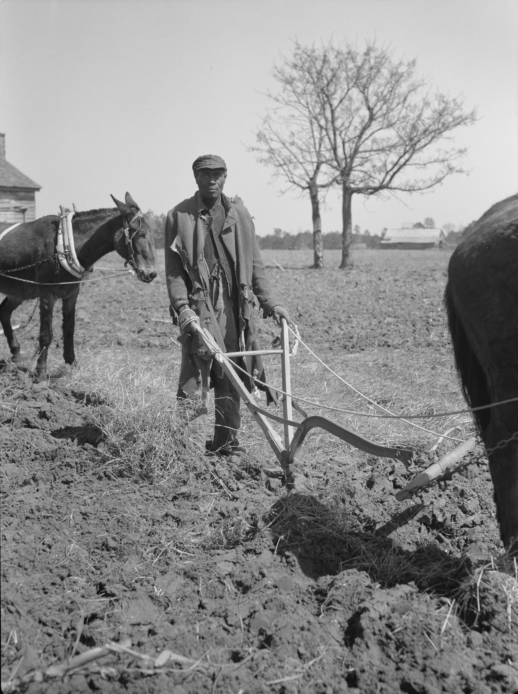
Why no machines? Because cotton resisted them at both ends. Picking the fluffy fiber without shredding it defeated engineers for sixty years — so every autumn, millions of hands (men, women, children, often at 100+ kg a day each) picked the Belt by hand, and a landlord with guaranteed cheap labor had no reason to buy iron. The first cracks came from a beetle: the boll weevil, which crossed from Mexico in 1892 and ate its way across the whole Belt by the 1920s, taking up to 31% of the crop in its worst year. Then came the New Deal's acreage payments (Chapter 6), which went to landlords — who cut their cotton acres, kept the checks, evicted tenant families by the hundreds of thousands, and bought tractors. The word for it was "tractored out."
The final blow was a machine. On October 2, 1944, at the Hopson Plantation near Clarksdale, Mississippi, International Harvester publicly demonstrated its production mechanical cotton picker before some 300 onlookers. The arithmetic that afternoon ended a civilization: a bale of cotton (about 218 kg) cost $39.41 to pick by hand — and $5.26 by machine. One picker did the work of 50 to 100 people. Machine harvest went from 5% of the crop (1950) to essentially 100% (late 1960s).
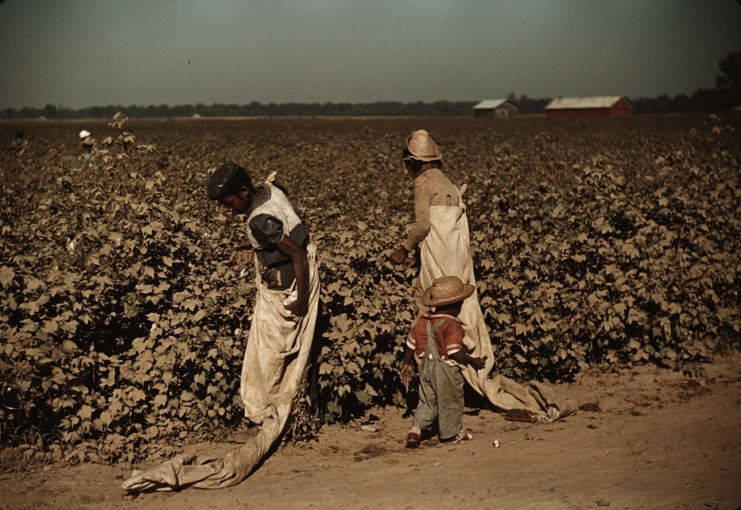
Push met pull. Northern factories, short of workers in two world wars, paid triple Southern farm wages — economists reckon the machine explains less than 40% of hand-picking's decline; wages did the rest. Between 1910 and 1970 about six million Black Americans left the South — the Great Migration — remaking Chicago, Detroit, New York, and Los Angeles; the share of Black Americans living in the South fell from 90% to 52%. And land ownership tells the bleakest line in this whole story: Black-operated farms peaked around 925,000 in 1920 — one in seven American farms. By 2022 the count was about 32,700, under 2% — a collapse driven not only by the exodus but by documented USDA loan discrimination (settled in Pigford v. Glickman, 1999, ~$1 billion) and forced sales of inherited "heirs' property." The phrase you may hear — "forty acres and a mule," the broken 1865 promise of land to freed families — is the ghost behind all of it.
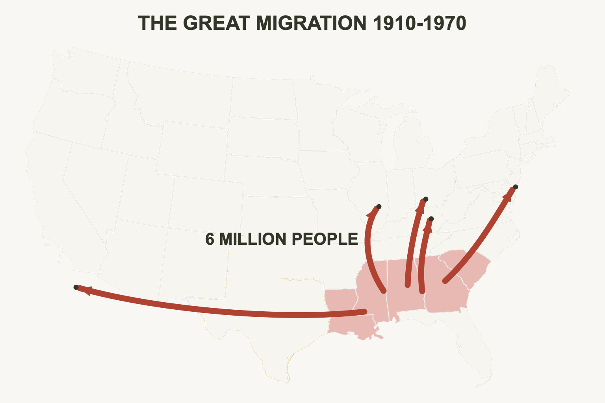
Now the machines are set, the story turns to biology and chemistry. Corn breaks a seventy-year yield ceiling; synthetic nitrogen lifts every crop; one machine erases the harvest crew; and a rotating sprinkler turns the dry Plains green by pumping water older than farming itself.
Seventy years of flat yields end, and seed becomes something you buy.
Corn (maize) is the master crop of American farming — the most-planted, most-valuable, and the one this story keeps circling back to, because most of it is not eaten by people but fed to pigs, cattle, and chickens, or turned into fuel and sweetener. So when corn changed, everything changed. And for the longest time, corn did not change at all: from 1866 to the mid-1930s, US corn averaged about 26 bushels an acre — flat for seventy years, no trend, generation after generation.
| Year | Bu/acre | t/ha |
|---|---|---|
| 1900 | ~28 | ~1.8 |
| 1936 & before | ~26 (flat) | ~1.6 |
| 1960 | ~54 | ~3.4 |
| 1990 | ~118 | ~7.4 |
| 2025 | 186.5 | 11.7 |
The breakthrough was hybrid corn, and the idea is counter-intuitive. Corn normally pollinates itself freely in the field (open-pollinated), and for ten thousand years farmers saved their best ears to plant next year. Breeders found that if you instead inbreed corn — self-pollinate it for generations — you get weak, weedy, uniform lines. But cross two different weak inbred lines, and their offspring explode with vigor, out-yielding both parents: a phenomenon called hybrid vigor (heterosis). George Shull showed the science around 1908; Donald Jones's "double-cross" method (1917–18) made the seed cheap enough to sell. It rode the Extension network (Chapter 6) from lab to field.
The salesman-scientist who carried it was Henry A. Wallace — an Iowa farm-paper editor who founded the Pioneer Hi-Bred seed company in 1926, then became US Secretary of Agriculture (1933–40) and Vice President of the United States (1941–45). Adoption was the fastest of any farm technology yet seen: about 1% of US corn acres were hybrid in 1935, over 30% by 1940, and ~96% by 1960; Iowa hit nearly 100% by 1942. The 1936 drought sold it for free — hybrid fields visibly survived while the old corn withered. Economists still teach this S-shaped adoption curve as the textbook example of how a new technology spreads.
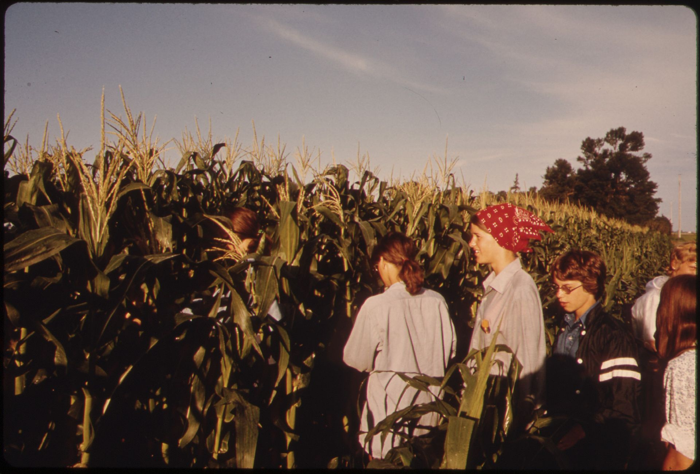
Yields went from ~26 to a record 186 bushels an acre in 2025 — about seven times over — and are still rising. But the hybrid carried a catch that reshaped the business of farming. Hybrid vigor lasts one generation only: if a farmer saves and replants hybrid seed, the next crop "segregates" into a weak, uneven mess. So the ancient practice of saving seed ended. Farmers now had to buy fresh hybrid seed every single year — and an industry rose to sell it, its wares advertised on roadside signs (DeKalb's winged ear of corn, sold as the "mortgage lifter"). Hold this thought: buying your seed every year, from a company that owns it, is the exact pattern that returns — supercharged — with genetically modified crops in Chapter 14.
Bombs to fertilizer, weeds to herbicides, and Silent Spring.
The invisible ceiling on every crop is nitrogen. Plants need lots of it, the air is 78% nitrogen gas — and plants can use none of it, because they cannot break the tough N≡N bond. For all of farming history, the only ways to add usable nitrogen were animal manure, mined deposits, or planting legumes (beans, clover) that host nitrogen-fixing bacteria in their roots. That is the real reason old farmers practiced crop rotation — not folklore, but nitrogen management: corn one year, a legume the next to refill the soil.
Then chemistry broke the ceiling. The Haber-Bosch process (first factory 1913, Germany) combines nitrogen from the air with hydrogen from natural gas, under heat and pressure, to make ammonia — synthetic fertilizer, manufactured from thin air. Its impact on humanity is hard to overstate: roughly half the nitrogen atoms in your body right now passed through a fertilizer factory. The American turn came from war. During World War II the US built about ten giant plants to make ammonia for explosives; after 1945 they switched product lines — the ammonium-nitrate chemistry of bombs is also fertilizer — and aimed at cornfields. (Muscle Shoals, Alabama, converted from munitions to fertilizer in 1947.) US nitrogen use went from about half a million tonnes a year in 1940 to roughly 10 million tonnes by 1980 — a twenty-fold rise. With cheap synthetic nitrogen, a farmer could grow "corn on corn" every year and skip the legume. Rotation, the oldest technique in this book, became optional.
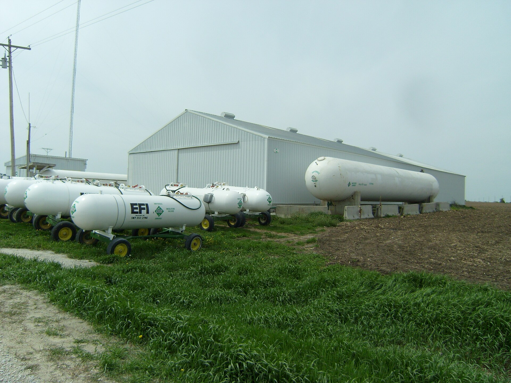
The same era chemically solved weeds and insects — the other two great labor sinks. 2,4-D (1945) was the first selective herbicide: a spray that kills broad-leaved weeds while leaving grass crops like corn and wheat unharmed, replacing the hoe and the cultivator. Atrazine followed (1958) and still goes on most US corn. And for insects there was DDT — a wartime miracle that stopped typhus and malaria by killing the lice and mosquitoes that carried them, then flooded onto farms (over 600,000 tonnes used in the US).
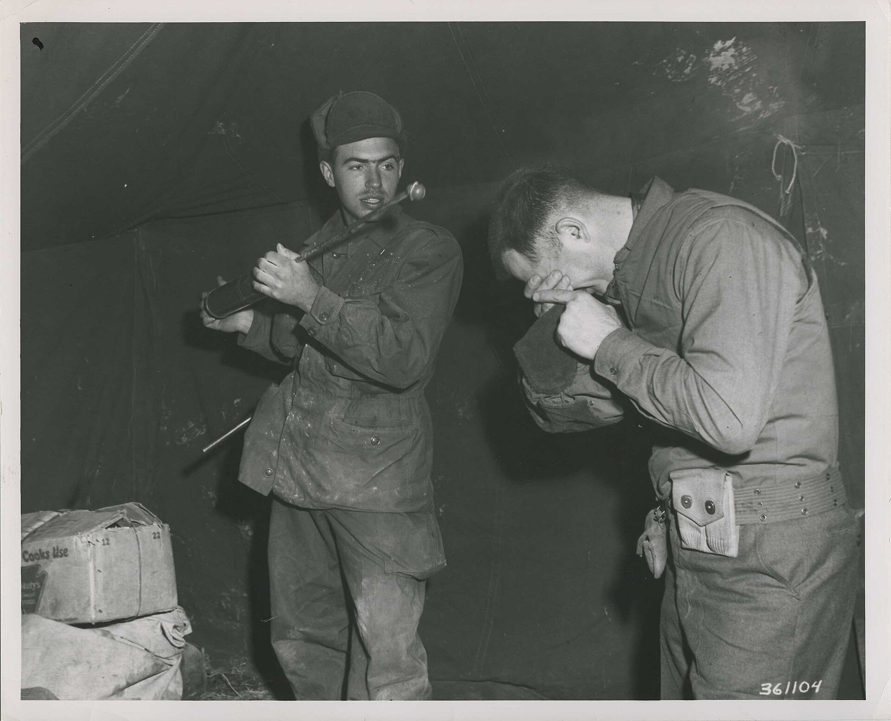
The reckoning came from a book. In 1962 the biologist Rachel Carson published Silent Spring, documenting how DDT built up through food chains and thinned the eggshells of eagles and falcons toward extinction. It changed the world: the new Environmental Protection Agency (opened December 1970) banned DDT in 1972. But some costs persist. Fertilizer that runs off Midwestern fields flows down the Mississippi and feeds a vast oxygen-starved "dead zone" in the Gulf of Mexico — a record 8,776 square miles (22,700 km² — about the size of the Indian state of Manipur) in 2017, where almost nothing can live. The chemical toolkit fed a nation and, in the same motion, wrote the first chapters of environmental regulation.
From twenty neighbors and a steam engine to one person in an air-conditioned cab.
The word tells the story. A combine is so called because it combines three separate operations that used to need a whole neighborhood: cutting the standing grain (reaping), beating the grain loose from the plant (threshing), and blowing away the chaff (cleaning). Remember the 1900 harvest from Chapter 3 — the binder, the shocks, the threshing ring of 15–30 men, the legendary noon dinners. The combine erased all of it, and reduced the entire harvest to one person in a cab.
The labor collapse is staggering. Producing 100 bushels of wheat took roughly 40–50 hours of human labor around 1900; by 1987 it took about 3. The self-propelled combine (one that drives itself rather than being pulled) arrived with Massey-Harris in 1938; during World War II, the company won government steel to build a "Harvest Brigade" of 500 combines that cut over a million acres from Texas to Canada, proving the migratory model. Corn heads (attachments that let combines harvest corn, 1954–56) then finished off the last big hand job — corn picking, where a good man managed about 100 bushels a day.
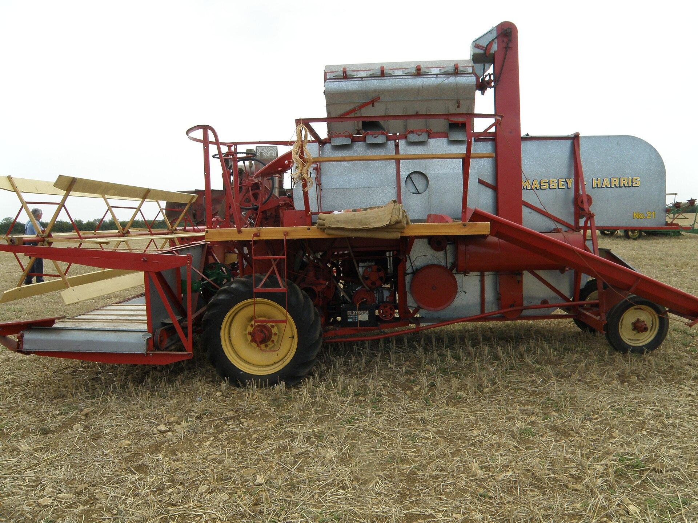
Out of the combine grew one of the most surprising institutions in American farming: the custom cutter. Because a combine costs a fortune and is used only a few weeks a year, crews of them go where the work is. Every May, some 800 custom-cutting crews start in the winter wheat of Texas and Oklahoma and work north — Kansas in June, Nebraska and the Dakotas through summer, into Canada by October — following the wheat as it ripens with latitude, living in trailers, harvesting other people's fields for a fee. The wheat harvest moves north across the continent like a slow gold wave, and a fleet of machines rides its crest.
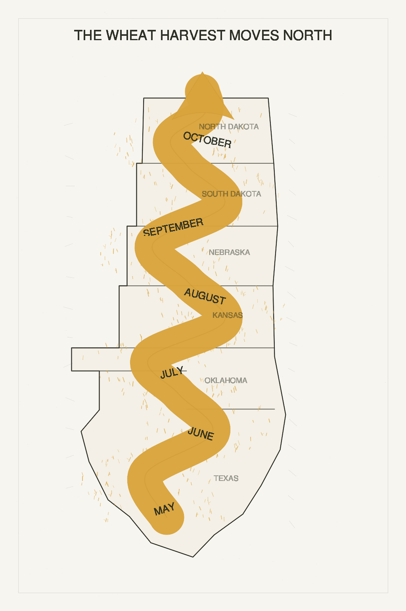
Today's machines make the 1900 crew look like another species. A top combine like the John Deere X9 has a 690-horsepower engine and a grain tank holding 460 bushels, cuts up to 30 acres an hour, and costs, fully equipped, somewhere between $700,000 and $1 million. It never even stops to unload: a tractor pulling a grain cart pulls alongside and the combine's auger (a spinning screw in a tube) empties the tank on the move, into trucks bound for the grain elevator — the tall concrete storage tower that stands over every Plains town. Do the arithmetic against the top of this page: that 1902 Walla Walla outfit — 33 horses and a six-man crew — cut about 40 acres in a day. One X9 operator does the same in about 80 minutes.
Center pivots, crop circles, and the slow draining of the Ogallala.
Return to the map from Chapter 1 and the 100th meridian — the line where rain drops below 20 inches and farming without irrigation becomes a gamble. For the whole first half of this story, the dry western Plains were cattle country because you couldn't reliably water crops there. One machine changed that, and you have already seen its handiwork from space.
In 1948 a Nebraska farmer named Frank Zybach built the first center pivot: a quarter-mile-long pipe, mounted on wheeled towers, that slowly rotates around a central well like the hand of a clock, spraying water as it goes (patented 1952). It waters a circle — about 125–130 acres inside a 160-acre quarter-section square. That is the secret of the aerial view: squares filled with green circles, each circle one pivot, is the signature landscape of the modern High Plains. From an airliner window it looks like abstract art; it is actually a map of groundwater.
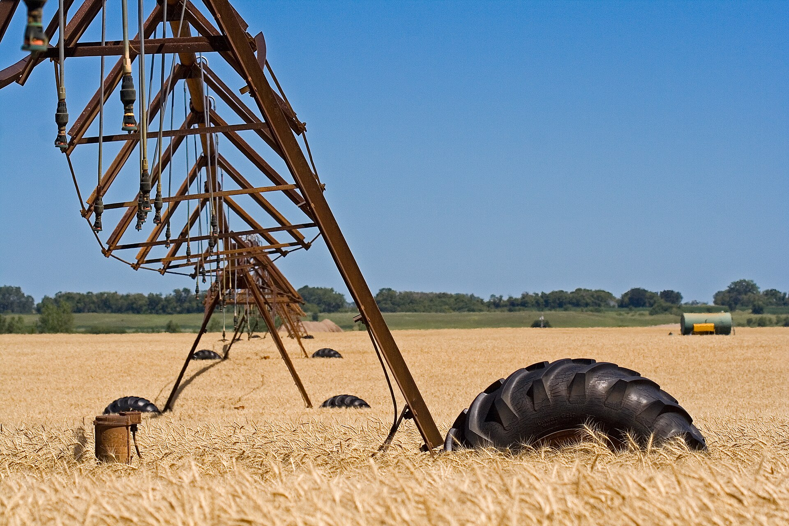
The water comes from below — from the Ogallala (High Plains) Aquifer, an underground layer of water-bearing rock spanning eight states, from South Dakota to Texas. And here is the catch that makes those pretty circles a countdown clock. The Ogallala is "fossil water," filled during the Ice Ages, and it recharges at less than an inch a year — for practical purposes, once you pump it, it is gone. It supplies about 30% of all the groundwater pumped for irrigation in the United States. By 2015 the aquifer had lost some 273 million acre-feet of water; average levels were down about 16 feet, but in the worst spots — southwest Kansas, the Texas Panhandle — 150 to 260 feet, and wells there have simply gone dry. Kansas is on track to have used up 69% of its share by around 2060. (The picture is uneven: Nebraska sits over two-thirds of the remaining water and keeps pumping, while parts of Texas have already reverted to dryland.)
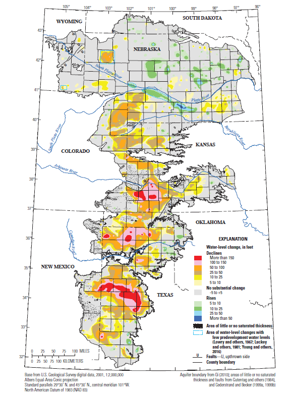
Why pump it dry? Because the economics are overwhelming: irrigated land is under 17% of US harvested cropland but produces over half the value of all crops. Irrigated corn in Nebraska yields about 224 bushels an acre against 119 for rain-fed. California runs the other great American irrigation story — not wells but a continent's worth of canals and dams moving mountain snowmelt to the Central Valley — and pays a parallel price: pumping groundwater there has caused the very ground to sink.
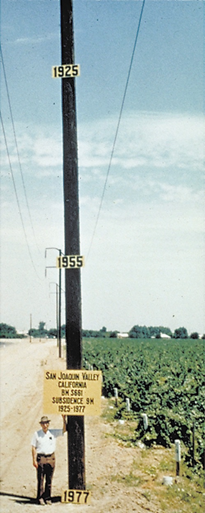
The machines and chemicals worked — so well that one family could now farm what five once did. What followed was arithmetic with human consequences: four million farms disappeared, rural towns emptied, and a debt-fueled boom ended in the worst rural collapse since the Depression.
Where did four million farms go?
This is the chapter where the three threads — machines, techniques, ownership — braid into a single number. American farms peaked at 6.8 million in 1935. Then, decade by decade, they vanished: 4.0 million by 1960, 2.4 million by 1980. Yet the total farmland barely moved. If the same land is divided among a third as many farms, each surviving farm must grow — and the average farm roughly tripled to about 426 acres by 1980. Nobody planned this. So what drove it?
| Year | Farms | Avg size |
|---|---|---|
| 1900 | 5.74M | 147 ac |
| 1935 (peak) | 6.81M | 155 ac |
| 1960 | 3.96M | 297 ac |
| 1980 | 2.44M | 426 ac |
| 2022 | 1.90M | 463 ac |
Note: the small 1997–2002 uptick is a census counting change, not real growth.
The answer is an idea called the technology treadmill, named by the agricultural economist Willard Cochrane in 1958. Follow the logic, because it explains most of modern farming. A new machine or seed lets an early adopter cut costs and profit. Seeing the profit, everyone adopts. But when everyone produces more cheaply, the extra output pushes prices down — until the profit is competed away and the new method is simply the cost of staying in business. The early birds did well; the late adopters break even; and the farmers who couldn't afford to modernize now can't cover costs and sell out — to a neighbor, who folds their land in to spread the cost of that expensive machine over more acres. Because a combine costs the same on 200 acres or 2,000, the treadmill's logic always says the same thing: get big. The farmers didn't fail; the ones who left were running as fast as the ones who stayed.
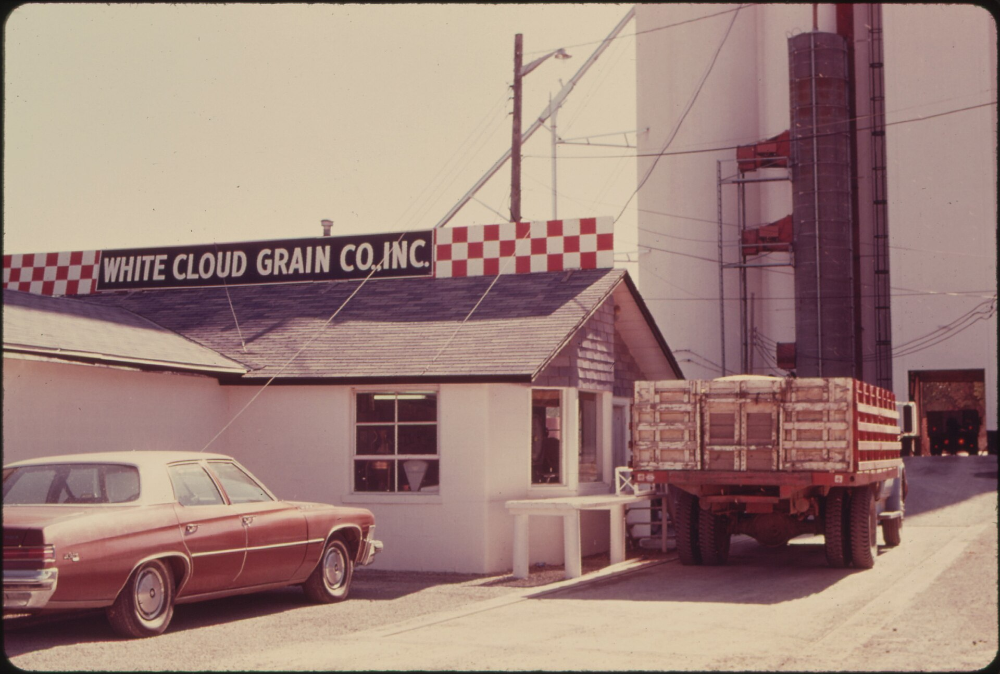
The people who left the farm didn't vanish; they moved to cities and factory jobs, and many were pulled by opportunity, not just pushed by failure — the postwar GI Bill sent a generation of farm-raised veterans to university, and few came back to the plow. But the countryside they left behind hollowed out. The Great Plains lost 44% of its young adults (age 20–29) in the 1950s alone. The country's school districts, one per farm community, fell from about 117,000 in 1940 to 15,000 by 1990 as tiny schools merged. "Main Street" — the row of family shops in every farm town — lost its customers one auction at a time.
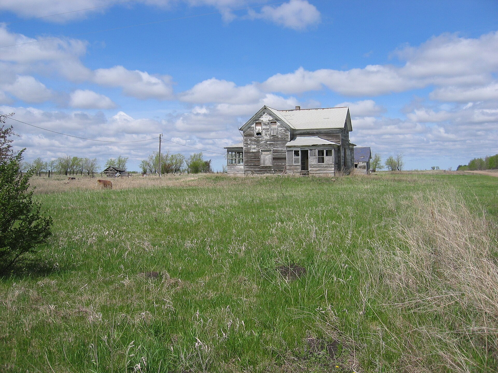
Government policy stopped resisting the trend and started cheering it. Earl Butz, Secretary of Agriculture from 1971 to 1976, told farmers to "get big or get out" and to plant "fencerow to fencerow" — tear out the hedgerows and farm every inch. He dismantled the New Deal's supply controls, betting on all-out production for export. The bet seemed to pay when, in July 1972, the Soviet Union quietly bought about 19 million tonnes of American grain — a quarter of the US wheat crop — in what the press called the "Great Grain Robbery." Prices soared: wheat from $1.68 to over $3 a bushel, corn tripled. Farmland followed, from $197 an acre (1970) to $737 (1980); Iowa cropland more than tripled. Farmers borrowed against the rising land to buy more land and bigger machines. Everyone felt rich. That is exactly how the next chapter's disaster was loaded.
The debt boom breaks: auctions, bank failures, and Farm Aid.
A boom built on debt and land is a trap waiting for a trigger. Through the 1970s, farmers borrowed heavily — encouraged by lenders who literally drove the back roads asking if anyone wanted more credit — to buy land and machines at ever-rising prices. US farm debt tripled, from $52 billion (1970) to $162 billion (1979). The collateral was the land itself, and as long as land kept rising, everyone was solvent on paper. Then three things reversed at once.
First, inflation. To break the runaway inflation of the era, the US central bank (the Federal Reserve), under chairman Paul Volcker, pushed interest rates to punishing highs — the benchmark "prime rate" hit a record 21.5% in 1981. For farmers carrying huge floating-rate loans, the interest bill became ruinous overnight. Second, exports collapsed: a 1980 US grain embargo against the Soviet Union (over its invasion of Afghanistan) sent buyers elsewhere, and a dollar that soared 83% made American grain too expensive abroad; farm exports fell from $44 billion to $26 billion. Third, and fatally, land prices — with no more boom to feed them — went into reverse.
The collapse was brutal. US farmland lost 34% of its value by 1987; in Iowa, the epicenter, cropland fell 62% — from $1,694 an acre to $652. Real net farm income cratered from $92 billion (1973) to $8 billion (1983). Farmers who had borrowed against $2,000 land now owed more than their $700 land could repay, and no amount of good farming could fix it. About 300,000 farmers defaulted; in 1983, Iowa alone saw roughly 500 farm auctions a month, as bankrupt families watched their land and machinery sold off the courthouse steps. Rural banks went down with them — farm banks were more than half of all US bank failures in 1985 — and the Farm Credit System, the farmers' own lending network, lost $2.7 billion in 1985 (then the largest one-year loss by any US financial institution) and needed a $4 billion federal rescue. Even the giants staggered: John Deere posted its first loss since 1933, and International Harvester — maker of the Farmall that had ended the horse era — sold off its farm-equipment business entirely.
The human toll went beyond money. Researchers counted 913 suicides among male farmers in just five Upper Midwest states during the 1980s; the strain drove some to violence that made national news. Out of the anguish came response. In September 1985, after Bob Dylan remarked at the global Live Aid concert that some money should go to American farmers, Willie Nelson organized Farm Aid — a benefit concert that raised $9 million and still runs annually forty years on. And the 1985 farm bill created the Conservation Reserve Program, paying farmers to take fragile, erosion-prone land out of production — an echo of the Dust Bowl's lesson, and a quiet admission that "fencerow to fencerow" had gone too far.
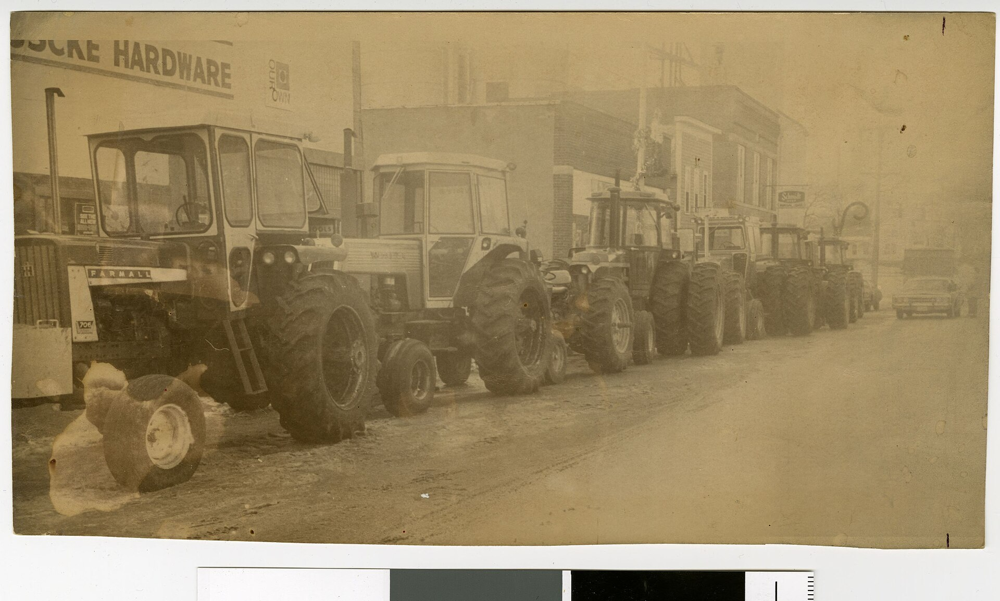
When the dust settled, the survivors bought the failed farms — and the consolidation of Chapter 12 took another great step forward. A generation of farm children, watching their parents lose everything, were quietly advised to do anything but farm. That warning still shapes who owns American land today, the subject of Chapter 16.
In the final act the farm becomes a data platform. Genes are edited into crops, satellites steer the tractor, cameras spray individual weeds — and the question of who actually owns America's land gets its strangest answer yet.
Genes from a soil bacterium, and the quiet retirement of the moldboard plow.
Genetic modification sounds exotic but the idea is narrow: instead of the slow lottery of cross-breeding, insert one specific, known gene directly into a plant. The first commercial GMO crops reached American fields in 1996, and two traits did almost all the work — each a solution to one of the labor problems this book keeps circling.
The first was weed control. Roundup Ready soybeans carry a gene (from a soil microbe) that lets the plant survive glyphosate, a cheap broad-spectrum weedkiller sold as Roundup. The farmer sprays the entire field; the weeds die, the crop shrugs it off. No cultivating, no hoeing, no guesswork. The second was insect control. Bt corn and cotton carry a gene from the soil bacterium Bacillus thuringiensis, so the plant manufactures its own protein that kills the caterpillars eating it — an insecticide built into the crop, harmless to the rest of us. Adoption was even faster than hybrid corn: herbicide-tolerant soybeans went from 17% of US acres (1997) to over 90% within two decades. Today more than 90% of all US corn, soybeans, and cotton are genetically engineered.
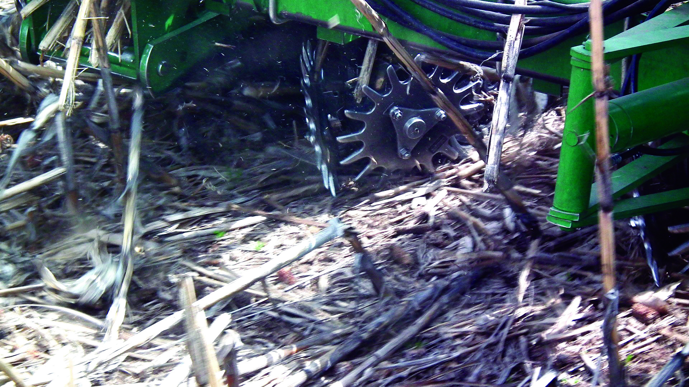
On safety, the scientific verdict is settled: the US National Academies of Sciences reviewed decades of evidence in 2016 and found no substantiated harm to human health from eating approved GE crops. The real problems are agronomic and economic, and they are genuine. Spraying one weedkiller everywhere bred "superweeds" that evolved resistance — 17 US weed species now shrug off glyphosate, infesting some 120 million acres; the war escalated to older, drift-prone chemicals like dicamba, which damaged up to an estimated 15 million acres of neighbors' non-resistant soybeans in 2018. And the ownership pattern from hybrid corn returned, intensified: GM seeds are patented, farmers sign contracts promising not to save them (the US Supreme Court agreed, unanimously, in 2013), and the industry consolidated into a "Big Four" — after Bayer bought Monsanto for $63 billion in 2018 — controlling over 60% of the world's seed and farm chemicals.
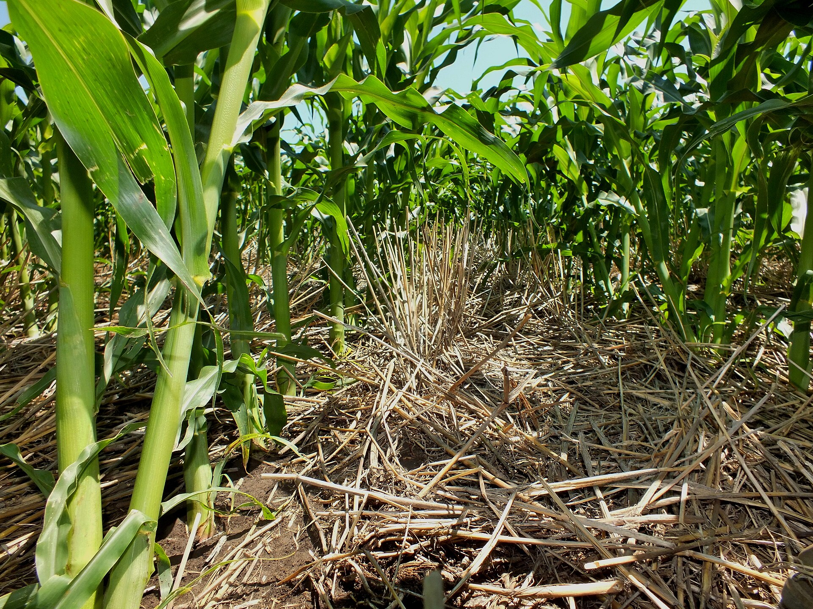
But step back for the closing irony of this whole story. Because glyphosate could kill weeds without a cultivator, farmers no longer needed to plow at all. In no-till farming, a planter cuts a narrow slot through the previous year's dead stubble and drops seed in — the soil is never turned over, never left bare and vulnerable. It cuts erosion by over 80%, saves fuel and water, and rebuilds soil life. Conservation tillage now covers about three-quarters of US corn and soybean land, and the newest wave — cover crops, planted only to protect and feed the soil between harvests — is spreading fast. The moldboard plow, the tool that opened this continent to farming and then helped blow it away in the 1930s, is disappearing from American fields. The story's oldest villain is being retired.
Satellites steer the tractor; cameras decide which weed dies.
Recall the combine cab from Chapter 10 — more screens than steering wheel. This chapter explains what fills those screens, and it began with a simple sensor. In 1992 an engineer named Al Myers built the first commercial yield monitor: a device in the combine that weighs the grain flowing in as the machine moves. Paired with GPS, it drew farmers the first maps of their own fields' variation — this corner makes 250 bushels an acre, that one only 120. Land that had looked uniform for a century turned out to be a patchwork, and now the patchwork could be measured.
Then came steering. John Deere's AutoTrac (2002) let a tractor drive itself down perfectly straight, perfectly parallel lines using GPS — with the high-precision "RTK" correction signal, accurate to about 2.5 centimetres, repeatable year after year. The driver still sits in the seat (mostly to watch and turn at the ends), but the machine does the steering. Why does an inch of accuracy matter? Because it eliminates overlap: no double-planted strips, no double-sprayed fertilizer, no wasted seed on a second pass. Guidance went from 5% of US corn acres in 2001 to over 58% by 2016. On top of it rides variable-rate application — the machine automatically puts more seed or fertilizer where the yield maps say the soil is good, less where it is poor, adjusting many times a second.
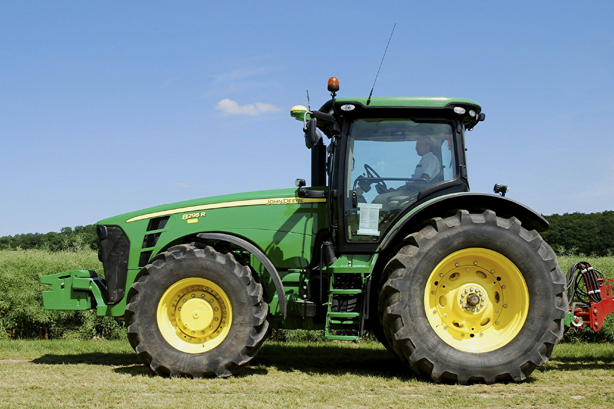
The frontier now is machine vision and autonomy. John Deere's See & Spray mounts 36 cameras on a 120-foot boom; artificial intelligence identifies each plant as it passes at 12 mph and sprays only the weeds, skipping the crop — an independent university trial measured herbicide savings of 43–59%. Fully autonomous tractors — no one in the cab at all — were unveiled by John Deere in 2022, with a stated goal of a driverless corn-and-soybean system by 2030 (only a few dozen run daily so far). In the dairy barn the robots already arrived: over 50,000 robotic milkers are in service worldwide, and the cows walk in to be milked whenever they like, no human present.
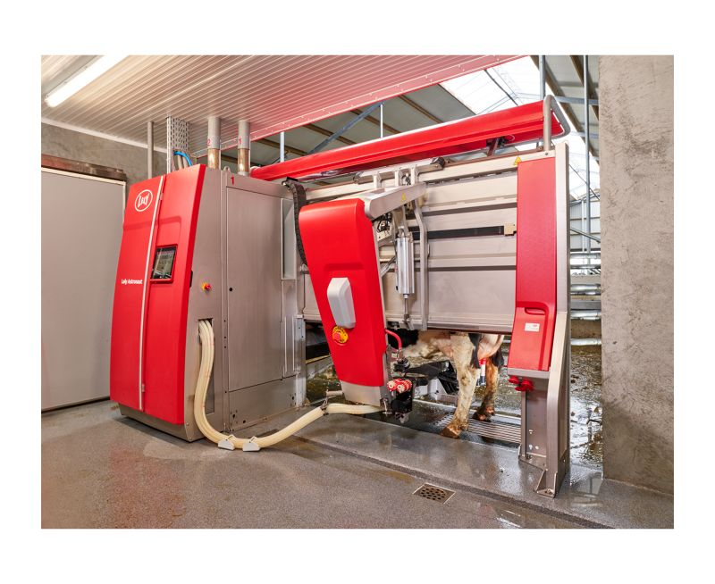
All this data raised new fights that would have baffled the 1900 farmer. Who owns the maps of your own fields — you, or the tractor company whose platform stores them? And when a $700,000 machine won't run because its software throws a code, can you fix it yourself, or must you wait for the dealer? That right to repair battle — farmers versus manufacturers over software locks — produced a 2023 agreement with the Farm Bureau and the first state repair law in Colorado. The through-line of this entire book reappears one last time: better tools, bigger machines, more acres per person, and a steady shift of power from the person on the land to the company that supplies the technology. Today one operator with this equipment manages several thousand acres — the midpoint US crop farm doubled in size again between 1982 and 2012.
1.9 million farms, but 6% of them sell three-quarters of everything.
We end where the numbers land. In 2022 the United States had 1,900,487 farms — under two million for the first time since before the Civil War — on 880 million acres, averaging 463 acres each. But that average is the most misleading number in this entire book, because the distribution behind it is a barbell, not a bell.
Here is the shape. Farms selling $1 million or more account for just 6% of all farms — and produce more than three-quarters of everything sold. At the other end, about 74% of farms sell under $50,000 a year, together making up roughly 2% of output: these are small, part-time, hobby, and retirement places whose owners mostly earn their living elsewhere. So "the American farm" is really two different things wearing one name — a vast number of tiny operations, and a small number of very large businesses that grow the food.
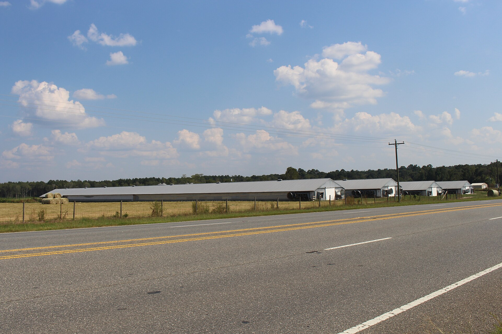
Two surprises for the outside reader. First, this is not a story of faceless corporations seizing the land: about 95% of US farms are family-owned, and the giant "corporate farm" of imagination barely exists — though a "family farm" today can be a business worth tens of millions. Second, the people who own the land increasingly do not farm it. About 39% of farmland is rented, much of it from retired farmers and city-dwelling heirs who inherited ground and lease it out — a large share of all American cropland is now owned by people who never set foot on it. Investors have noticed: the largest private farmland owner in America is the software billionaire Bill Gates, with roughly 240,000 acres — though even that is under 0.03% of the national total, so the headlines outrun the reality. Foreign investors hold about 3.6% of private agricultural land.
The starkest modern ownership story is contract farming in livestock, and chicken is the extreme. Some 99.5% of American chicken is raised by farmers who sign contracts with big processing companies (Tyson, Pilgrim's and a few others): the farmer borrows to build the barns and takes on the debt, while the company owns the birds, supplies the feed, and pays the grower by a ranking against neighbors. Economists call it vertical integration — one company controlling every step. The independent farmer, here, has become something closer to a contracted employee who happens to own the building.
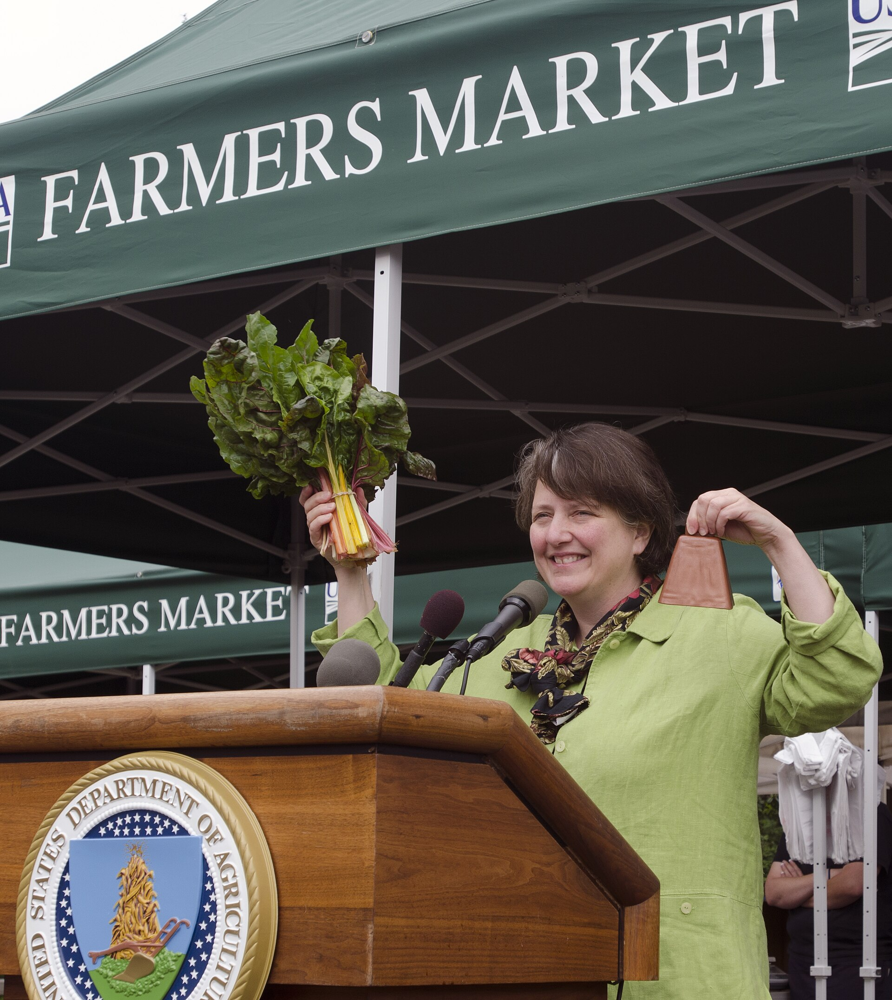
And who are the farmers? Old, and part-time. The average US farmer is 58 years old; there are more producers over 75 than under 35. Most farm households earn the majority of their income off the farm — and the median farm household actually lost about $900 from farming itself in 2023, living instead on town jobs and the spouse's paycheck. The barrier to entry is brutal: prime Iowa cropland runs over $11,000 an acre, so a modest 500-acre farm means a land purchase near $5.8 million, before a single $700,000 machine. One quiet statistic frames the whole century: the government still defines a "farm" as any place selling just $1,000 of products a year — a bar unchanged since the 1970s — which is why the count stays near two million even as the number of places that actually make a living from farming keeps shrinking toward the few.
The land stayed the same. Everything on it changed.
One hundred and twenty years, three revolutions — machines, techniques, ownership — braided into a single transformation. If you remember nothing else, remember these ten contrasts. The acreage barely moved; the farms, the people, the horses, and the harvests are almost unrecognizable.
The story does not really end; it accelerates. The plow that broke the prairie is being retired for no-till planters; the aquifer that greened the Plains is being counted down; the family that defined the farm is aging out while a handful of large operations grow most of the food, watched over by satellites and, increasingly, by no one in the cab at all. A visitor flying over Iowa today sees the same 1785 checkerboard the homesteaders saw — but almost everything happening inside those squares would be unrecognizable to the family posing, a cow on the roof, in front of their sod house in 1886.
Go deeper